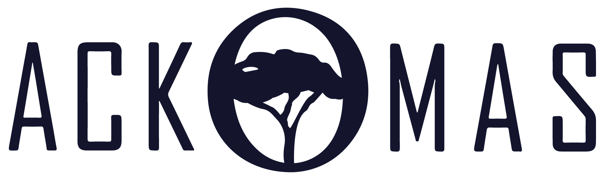
Installée à Amiens depuis sa création en 2021, Ackomas contribue au rayonnement du secteur numérique amiénois, en faisant partie des entreprises innovantes implantées sur le territoire et participe au développement de la filière numérique amiénoise, secteur identifié comme stratégique pour la diversification économique du territoire, tout en étant spécialiste des industries de santé et de leurs enjeux.
Ackomas adresse toutes les bases de données réglementaires internationales : Eudamed, GUDID, Swissdamed, AusUDID, SIUD, etc.
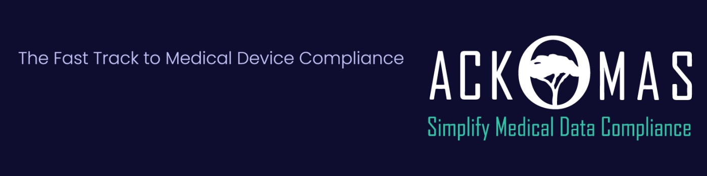
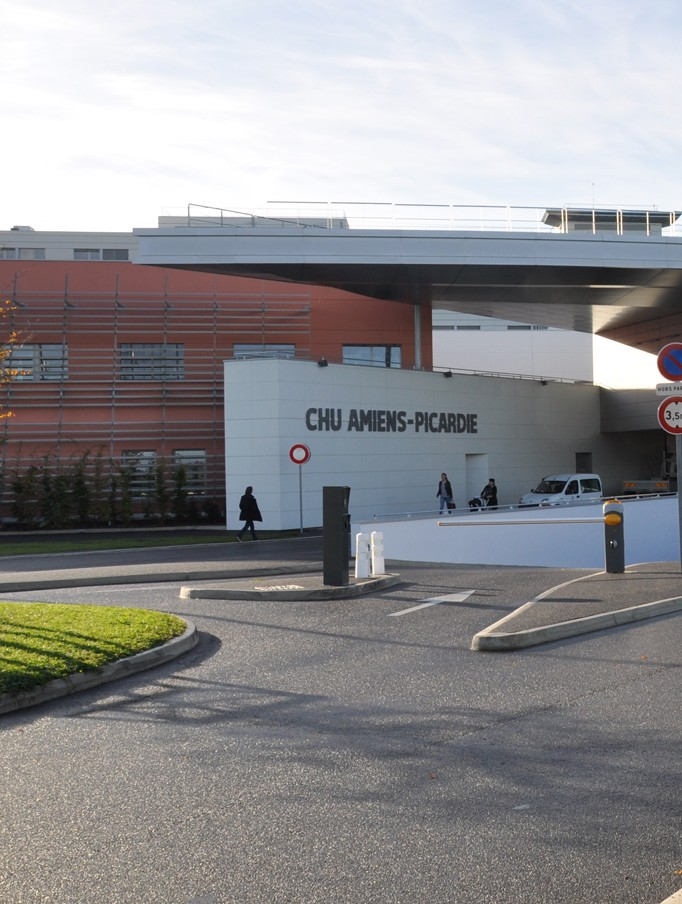
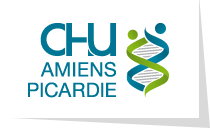
Établissement de référence du Sud des Hauts-de-France, couvrant un territoire de plus de 2 millions d’habitants, le CHUAP renforce continuellement son impact au service des besoins de santé de la population, tout en affirmant son ouverture, son rayonnement régional et interrégional, dans une logique de groupe public hospitalier solidaire et responsable.
Premier employeur de Picardie et Pôle d’excellence en santé, le CHUAP assure les grandes missions suivantes : soin, enseignement-formation, recherche-innovation, gestion de la démographie médicale.
Animé par 6 700 professionnels, dont près de 900 médecins, le CHUAP déploie ses activités au sein de près de 1 700 lits et places, au service de son bassin de population de proximité comme de son territoire de recours, notamment en cancérologie, soins critiques, maternité de niveau 3, greffes, chirurgie conventionnelle et ambulatoire.
Le CHUAP est résolument engagé sur son territoire. Établissement pivot du Groupe hospitalier public « Somme Littoral Sud », le CHUAP fédère 10 établissements, représentant plus de 13 000 professionnels, au service d’un bassin de vie de plus de 700 000 habitants. Le groupe public bénéficie de près de 5 400 lits et places et gère un budget consolidé de 1,5 milliard d’euros.
En 2025, cette dynamique se traduit notamment par :
- Près de 880 000 prises en charge (+5%)
- 166 700 séjours et séances MCO (+5,4%)
- 708 000 consultations et actes externes (+4,8%)
- 106 800 passages aux urgences (+30%)
- 2 592 naissances (+0,9%)
- 34 700 interventions chirurgicales et obstétricales (+3,3%)
Le CHUAP dispose de 14 Ecoles et Instituts de formation professionnelle en santé ainsi que d’un Centre de simulation de renommée internationale, SimUSanté®, reconnu comme le plus grand Pôle européen d’excellence en pédagogie active et simulation en santé.
La grande qualité du partenariat avec l’UPJV dynamise également le développement de la recherche en santé autour de trois axes communs, Cancers, Neurosciences et Innovations chirurgicales
À noter dernièrement, les « Premières » réalisées par les équipes amiénoises :
- En Chirurgie Urologique : 1ère implantation, en février 2025 d’un sphincter artificiel urinaire par voie mini-invasive avec robot-assistée
- En Hépato-gastroentérologie : 1ère Gastroplastie endoscopique (EndoSleeve), intervention innovante, mini-invasive, sans incision, ouvrant une alternative pour des patients non éligibles à une prise en charge chirurgicale classique
- En Neurochirurgie : 1ère mondiale, en mars 2026 d’une cingulotomie bilatérale réalisée sous assistance robotique et LITT, une avancée majeure dans le traitement des douleurs réfractaires
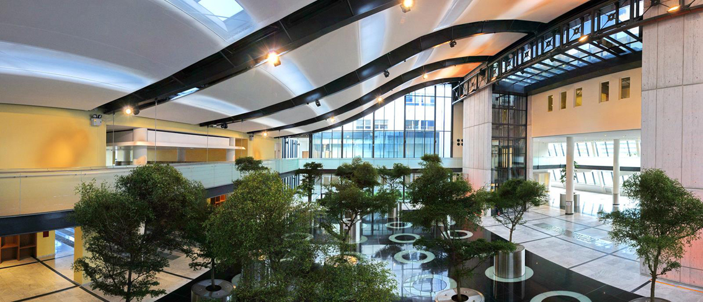
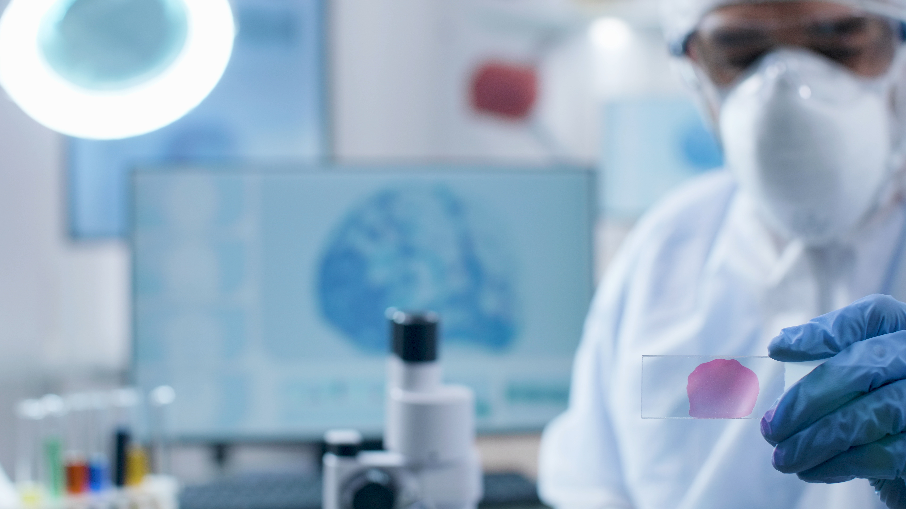
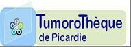
La Tumorothèque de Picardie, adossée au service d’Anatomie et Cytologie Pathologiques du CHU Amiens-Picardie, est une banque de tissus hospitalière au service de la recherche en cancérologie.
Certifiée selon la norme ISO 9001, elle collecte, conserve et met à disposition des ressources biologiques de qualité, dans un cadre garantissant leur traçabilité et leur conformité réglementaire. Structure d’appui à la recherche translationnelle, elle constitue un levier de valorisation de la recherche en Picardie et l’une des pierres angulaires du futur Institut de Cancérologie Universitaire Public de Picardie.
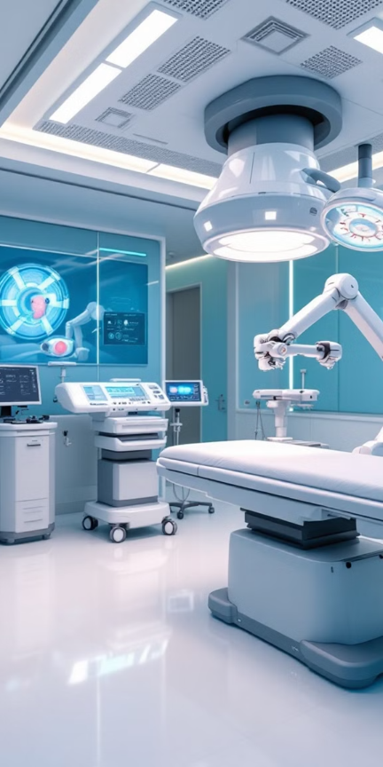
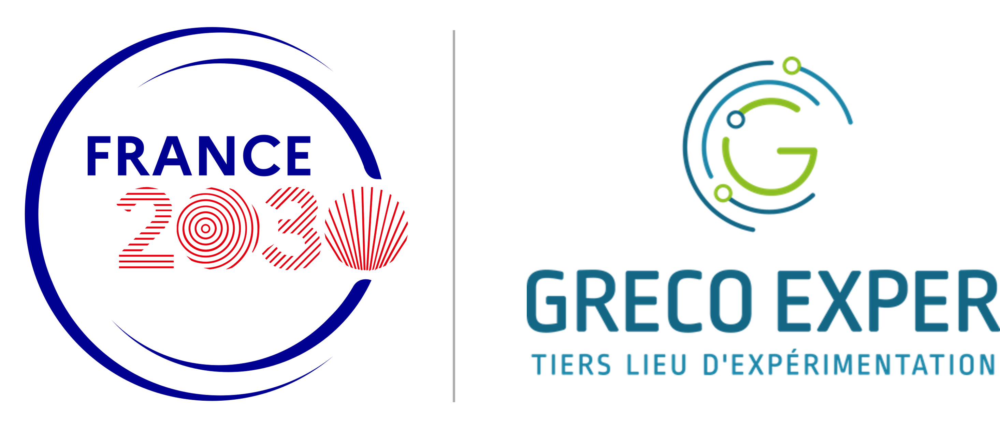
’GRECO EXPER est porté par un consortium de 5 membres : CHU Amiens-Picardie, l’UPJV, Numih France, la SATT Nord et innov'a.
Il est lauréat de l’AAP Tiers-Lieu d’Expérimentation, opération soutenue par l’État dans le cadre de France 2030, opéré par la Caisse des Dépôts.
Ses objectifs :
- Fiabiliser les actes chirurgicaux et interventionnels,
- Améliorer le rétablissement précoce
- Utiliser les technologies pour optimiser tout le parcours patient
Sa mission : Favoriser l’émergence, l’expérimentation et la diffusion des technologies innovantes en santé interventionnelle pour un parcours patient plus sûr et continu grâce à l’assistance robotique et à l’IA.
- Tester et valider
- Accès à des environnements cliniques réels
- Accès à des environnements de simulation
- Accès à des données Collaborer - Interaction directe avec des praticiens experts - Interaction directe avec des patients et usagers
- Aide au prototypage Accélérer
- Appui réglementaire
- Recherche pré-clinique accélérant les autorisations de recherche clinique
- Etudes cliniques accélérant le marquage CE- Valorisation des innovations Promouvoir - Participation à un écosystème international d’excellence
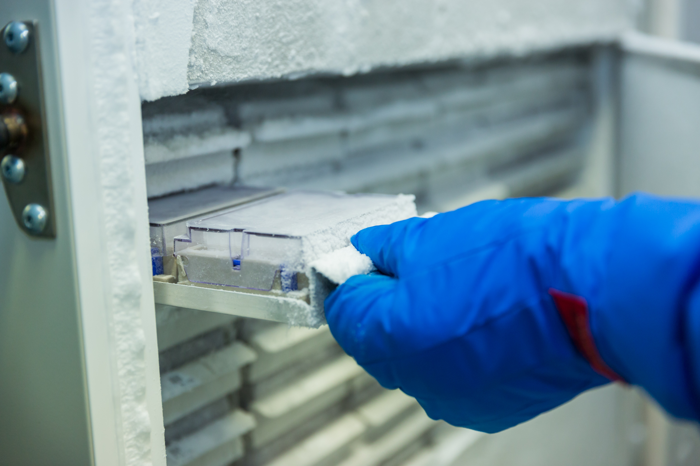
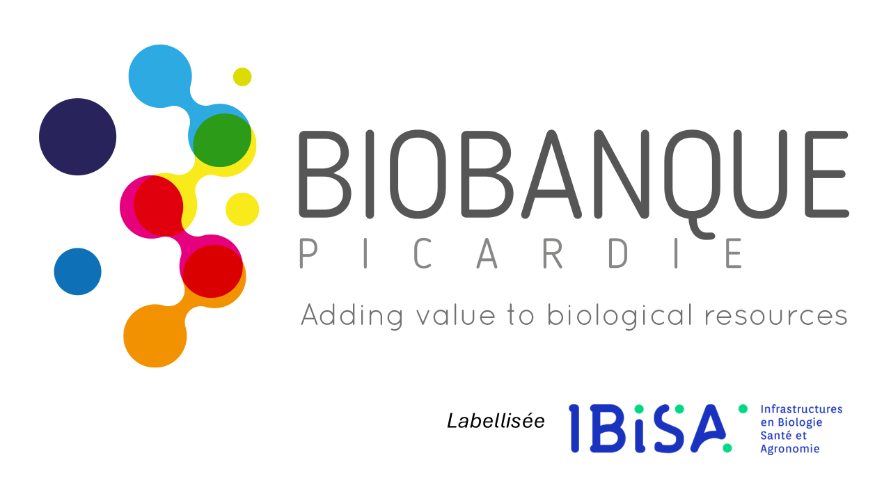
Pionnière et KOL dans son domaine, la Biobanque de Picardie propose différents services en lien avec les ressources biologiques: 1) Cession d'échantillons biologiques qualifiés et données associées 2) Conservation Sécurisée d'échantillons biologiques 3) Traitement, Transformation et Contrôle Qualité à façon de Ressources Biologiques 4) Prestations de R&D (ex: optimisation de milieux de culture par DoE); 5) Prestations de Conseil (ex: réglementation relatives aux échantillons, management de la qualité ; 6) Préparation des kits de prélèvements pour les études cliniques
Labellisation GIS-IBiSA (https://www.ibisa.net/annuaire-crb/biobanque-picardie-185.html)
Partenariats:
- Coordination du Réseau National des CRB de CHU depuis près de 6 ans,
- Participation à plusieurs projets nationaux multicentriques dont PIA1 et France 2030;
Compétences Spécifiques :
- Isolement et cultures d'hapatocytes primaires humains,
- Dérivation et maintenance de lignées d'hiPS (cellules souches pluripotentes induites)

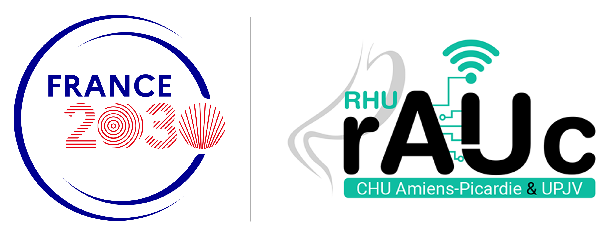
RAUC propose un nouveau référentiel pour la prise en charge des patients opérés d’une urgence chirurgicale digestive, en appliquant les principes de la Réhabilitation Améliorée Après Chirurgie optimisés par : la prédétermination du parcours patient par un algorithme de triage grâce à l’IA, l’application d’un score de gradation des interventions chirurgicales et l’utilisation de dispositifs de e-santé (CRP au doigt à domicile, patch connecté, application sur smartphone). Tout cela dans le but de réduire les complications postopératoires et la réhospitalisation non programmée. Ce projet porté par le CHU Amiens Picardie, l’UPJV, Medtronic et RDS, a bénéficié d’une aide de l’Etat gérée par l’Agence Nationale de la Recherche au titre du Programme d’Investissements d’Avenir portant la référence ANR-23-RHUS-0019
RAUC rassemble énormément d’acteurs que ce soit académiques, institutionnels ou industriels. Les partenaires du RHU RAUC sont
- Le CHU Amiens Picardie (comprenant le service de chirurgie digestive ; le service d’anesthésie et réanimation ; le service des urgences ; la radiologie ; le CBH ; la DRCI ; la DSN ; SimUSanté).
- MEDTRONIC (leader mondial des technologies, services et solutions pour le secteur médical).
- RDS (solution multiparamétrique de haute précision pour surveiller en continu les paramètres physiologiques des patients à l'hôpital ou à domicile.).
- L’Université de Picardie Jules Verne, avec les unités de recherches SSPC et MIS.
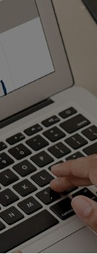
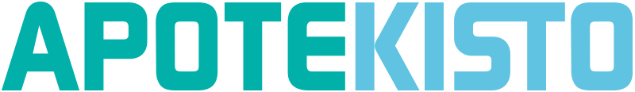
Basée à Amiens, notre société est spécialisée dans le développement de solutions web pour le secteur de la santé. Nous concevons des sites internet e-commerce sur mesure, principalement à destination des pharmacies, afin de les accompagner dans leur transformation numérique. Notre activité contribue au dynamisme économique du territoire amiénois en proposant des services innovants, en collaborant avec des acteurs locaux lorsque cela est possible et en participant au développement des compétences numériques de la région.
LaboData est la base de données de fiches produit pour site internet de pharmacies la plus accessible et la plus performante en France. Quotidiennement mise à jour ! Sans cesse complétée avec de nouvelles marques !
Notre équipe met à profit plus de 10 ans d’expérience dans le développement web dédié au secteur de la santé. Nous maîtrisons l’ensemble des étapes d’un projet digital : conseil, conception, développement, intégration, maintenance et accompagnement. Notre savoir-faire repose sur une parfaite compréhension des enjeux des pharmacies et des contraintes réglementaires du secteur.
Avec plus de 200 pharmacies accompagnées, nous avons développé une expertise reconnue dans la création de sites e-commerce performants, sécurisés et adaptés aux besoins des officines. Nous privilégions des solutions sur mesure, une relation de proximité avec nos clients et un accompagnement durable afin de contribuer à leur développement numérique.
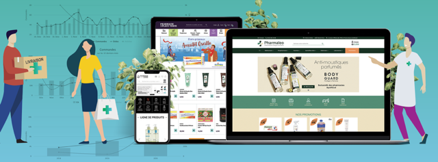
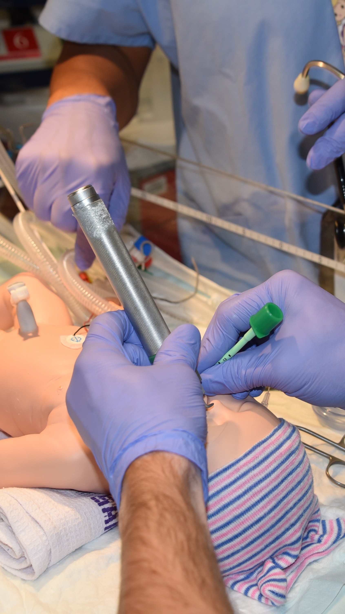
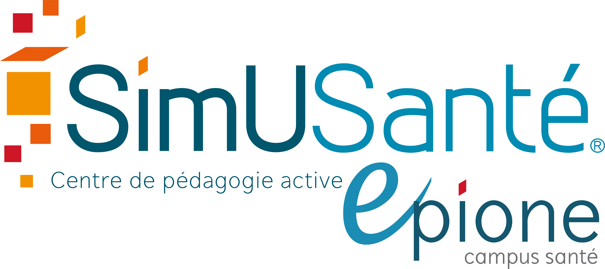
Labellisé par l’ANR « Initiative d’excellence en formation innovante », SimUSanté a trois missions : apprendre autrement, développer de nouvelles pratiques cliniques, améliorer les environnements de travail en santé. Ses 40O0 m² d’environnements de soins reconstitués sont dédiés à la formation et la recherche. Son succès est le résultat d’une dynamique du CHU d’Amiens-Picardie et de l’Université Picardie Jules Verne. Les collaborations sont nombreuses : industriels, associations de patients et aidants, représentants professionnels, échanges internationaux…
Catalogue de formation de SimUSanté : https://simusante.com/les-formations-simusante/catalogue-de-formation/
Epione : https://simusante.com/epione-campus-sante/
PRIMANS : https://simusante.com/primans_programme-innovant-mutualise-apprentissage-numerique-sante/
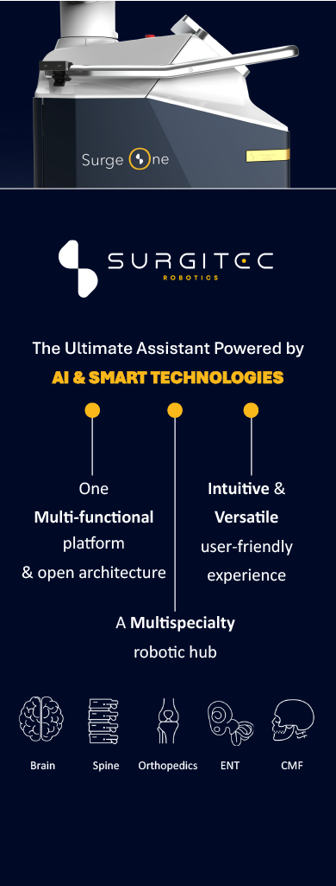
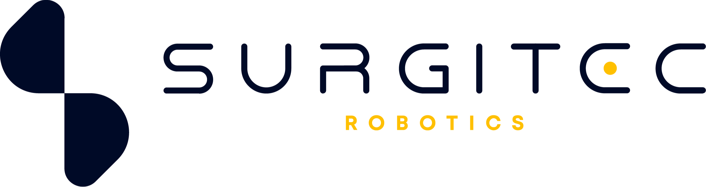
Surgitec Robotics développe une nouvelle génération de robots chirurgicaux dédiés aux chirurgies des tissus osseux* conçue pour rendre accessible, à grande échelle, un soin d’excellence.
Notre plateforme robotique de pointe associe intelligence artificielle et technologies robotiques avancées pour offrir aux chirurgiens une précision inégalée, tout en rendant son usage simple, intuitif et accessible.
*neurochirurgie, rachis, orthopédie, ORL et chirurgie maxillo-faciale
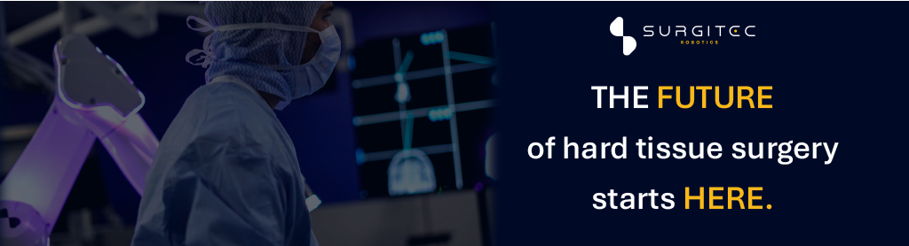
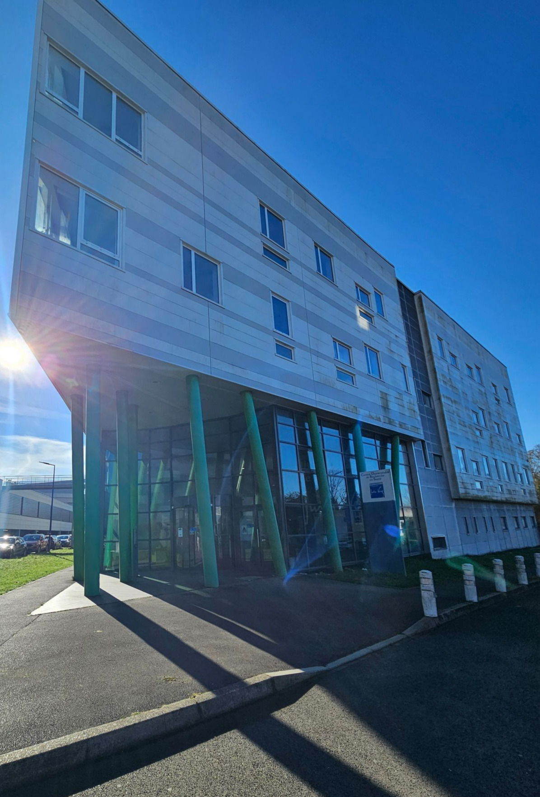
Le CURS regroupe plusieurs unité de recherche spécialisées (neurosciences, addictions, risques cadiovascularité, cancer, périnatalité...) dont deux labellisées Inserm.
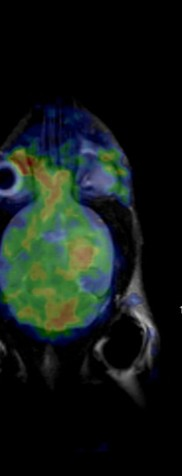
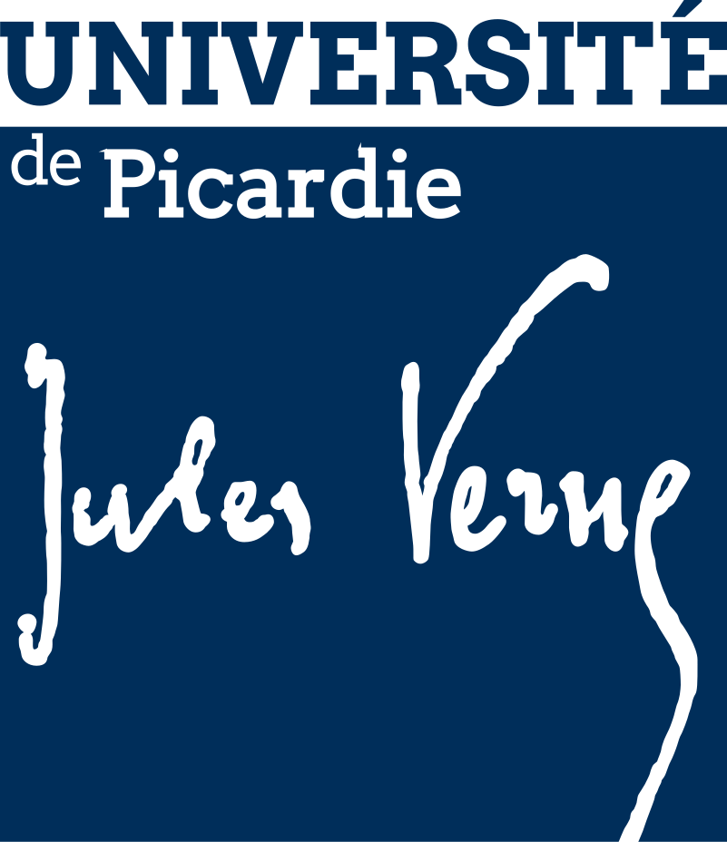
PIRMPA est équipée d un imageur IRM préclinique 7 Tesla dédié à l exploration morphologique, fonctionnelle et métabolique in vivo sur rongeurs. Connectée directement à l animalerie PlatAnn, elle propose des études d angiographie, de perfusion et de tractographie cérébrale.
IRM Bruker BioSpec 70/20 USR (7T, gradients 440 mT/m), consoles ParaVision 360, monitoring physiologique.
Expertise en traitement d images RM, spectroscopie 1H in vivo et protocoles d imagerie cardiovasculaire/cérébrale.
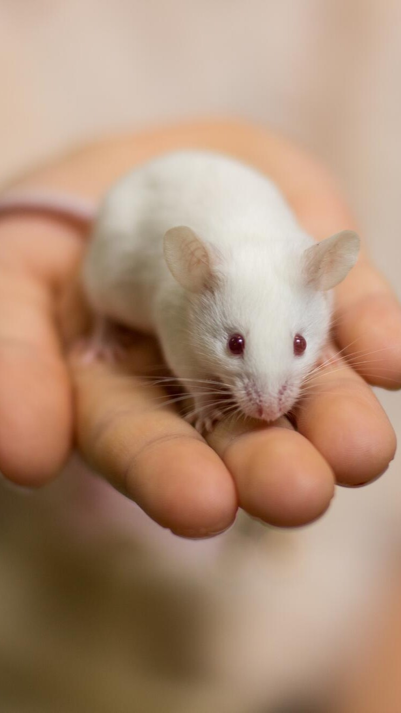
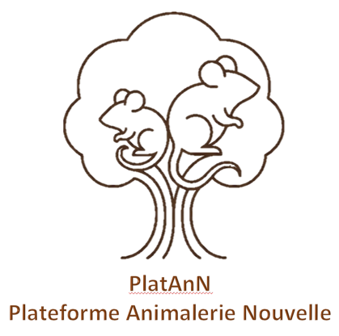
L'animalerie accueil des projets en lien avec l'addiction, l'impacts de facteurs environnementaux tels que les ondes (3G, 4G, 5G...) et les pesticides, l'infectiologie, la reconstruction osseuse ou encore les maladies cardiovasculaires.
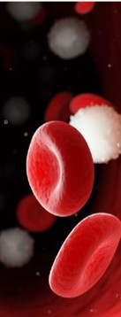
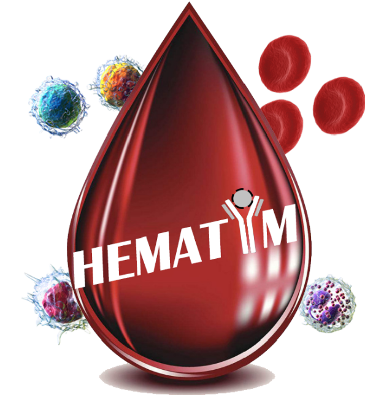
HEMATIM explore la différenciation des cellules souches sanguines et la lymphopoïèse dans les pathologies hématologiques (leucémies, anémies de l insuffisance rénale). Elle développe des outils de pointe comme l édition génomique CrispR-Cas et la cytométrie en flux à Amiens.
Cytomètre en flux 8 couleurs, trieur cellulaire laser, PCR digitale, plateforme Nanostring, ImageStream MKII.
Savoir-faire en culture de progéniteurs érythroïdes immortalisés, transcriptomique Nanostring et PCR digitale.
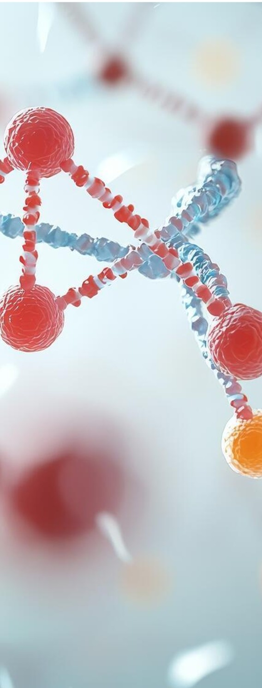
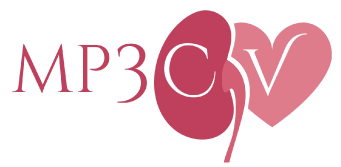
L'unité MP3CV étudie les mécanismes moléculaires, cellulaires et hémodynamiques des calcifications cardiovasculaires associées au vieillissement et à l'insuffisance rénale chronique. Elle développe de nouvelles cibles thérapeutiques et des outils diagnostiques innovants.
Salles de culture L1/L2, cytométrie en flux, PCR quantitative, blocs opératoires rongeurs, imagerie échographique.
Expertise translationnelle en biologie vasculaire, néphrologie expérimentale et chirurgie vasculaire sur rongeurs.
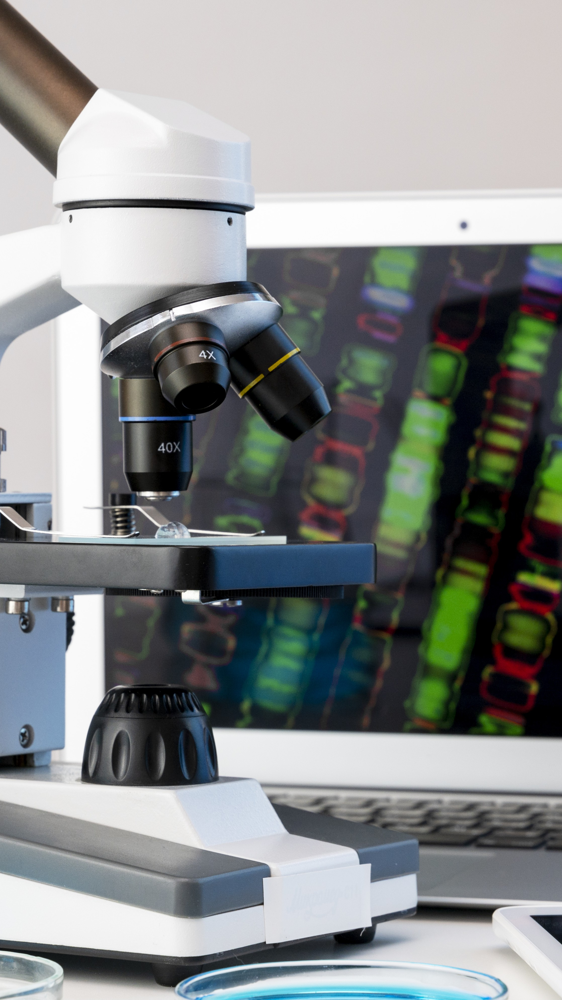
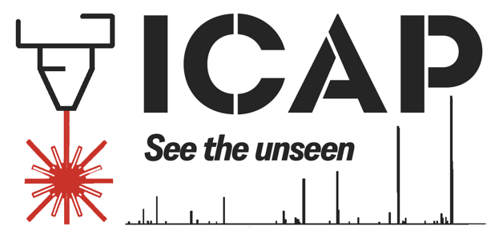
ICAP accompagne à Amiens Métropole le développement, l’évaluation et l’intégration d’innovations en santé. La plateforme connecte cliniciens, chercheurs, entreprises et acteurs publics pour faire émerger des solutions utiles au territoire. Elle facilite l’accès aux terrains d’expérimentation, soutient les projets innovants et favorise leur transfert vers la pratique clinique, en lien étroit avec le CHU Amiens-Picardie et l’écosystème local.
La plateforme est labellisée par le GIS iBISA et fait partie de l'INBS (Infrastructure Nationale en Biologie et Santé) PROFI (UAR 2048).
Compétences
Montage et pilotage de projets innovants, accès aux plateaux techniques et terrains cliniques, coordination d’acteurs, accompagnement méthodologique et réglementaire, appui au financement, évaluation en conditions réelles,
Partenariats
Avec CHU Amiens-Picardie, UPJV, entreprises medtech/biotech, collectivités, diffusion et valorisation des innovations.
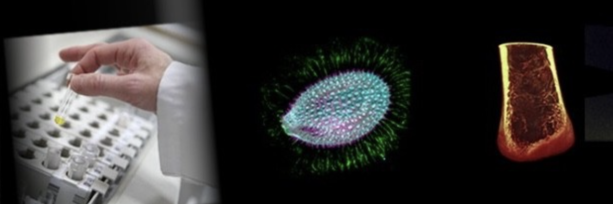
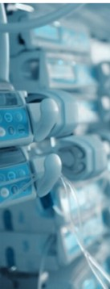
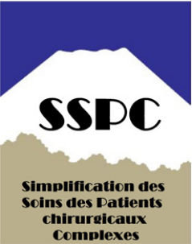
SSPC est une unité de recherche clinique multidisciplinaire dédiée aux protocoles de Réhabilitation Améliorée après Chirurgie (RAC) et à la chirurgie mini-invasive. Elle développe des algorithmes IA et des dispositifs de suivi connecté pour réduire les réhospitalisations.
Accès à la plateforme SimUSanté, bloc opératoire robotisé GRECO, biobanque de tissus digestifs.
Expertise nationale en protocoles RAC/ambulatoire, e-santé chirurgicale et essais cliniques multicentriques.
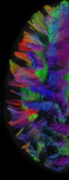
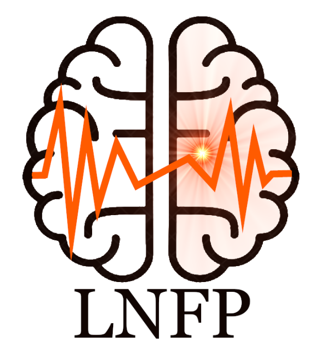
Le LNFP étudie l architecture des fonctions exécutives et attentionnelles et leurs perturbations dans les pathologies cérébrales (AVC, maladie d Alzheimer, Sclérose en plaques). Il développe et valide de nouvelles batteries de tests cognitifs diffusées au niveau national.
Système EEG 256 canaux (Geodesic), eyetracker EyeTribe, logiciels d évaluation cognitive VISION & E-Prime.
Expertise en Voxel Lesion Symptom Mapping (VLSM), neuro-imagerie quantitative et évaluation neurocomportementale.
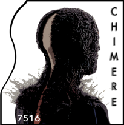
CHIMERE associe médecine, robotique et sciences humaines pour la chirurgie de précision de la face et du cou. Basée à l'Institut Faire Faces d'Amiens, elle développe des substituts osseux sur-mesure, la modélisation des flux cérébro-spinaux et l'analyse 3D de la mimique faciale.
Plateforme FACEMOCAP (capture de mouvement 3D), oculomètres, spectroscopie SpiderMass, imagerie métabolique.
Expertise interdisciplinaire unique en reconstruction maxillo-faciale, motion capture faciale et oculométrie.
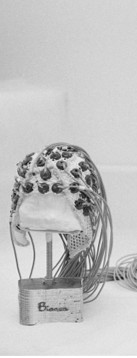
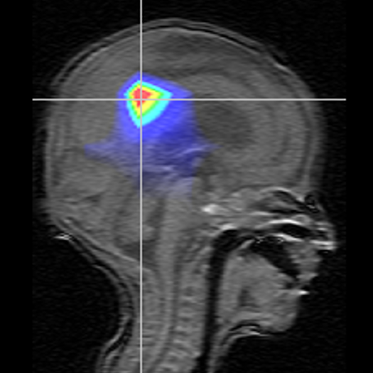
Le GRAMFC conçoit des dispositifs diagnostics non invasifs pour explorer la maturation et les pathologies cérébrales chez le nouveau-né et l'enfant (épilepsie, prématurité, autisme). Il a donné naissance à la spin-off amiénoise Seenel Imaging commercialisant le casque Medelopt.
Système MEG OPM (pompage optique), EEG Haute Densité, imagerie optique fNIRS/DCS, casque Medelopt.
Pionnier mondial du couplage électroencéphalographie (EEG-HD) et imagerie optique NIRS/DCS chez le prématuré.
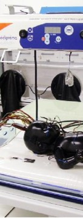
PériTox est une unité mixte UPJV/INERIS dédiée à l étude des effets des polluants (pesticides, radiofréquences 5G) et du stress thermique sur la santé du fœtus et de l enfant. Elle a conçu le logiciel PRETHERM pour l optimisation thermique des incubateurs de prématurés.
Mannequin thermique pédiatrique, incubateurs instrumentés, simulateur d intestin, bancs d exposition RF.
Pionnier du concept DOHaD (exposome) avec mannequins thermiques et modélisation d intestin artificiel.
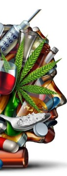
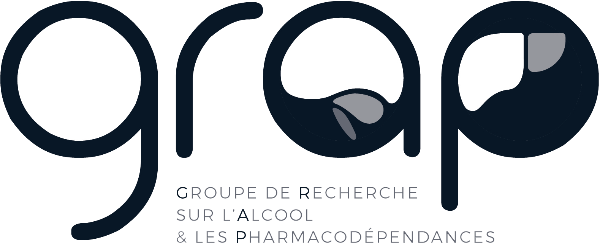
Le GRAP étudie la vulnérabilité neurobiologique et environnementale aux addictions (alcool, médicaments) et leurs dommages cognitifs et hépatiques. L'unité développe des modèles animaux uniques en France et l'application e-santé MyDéfi dédiée aux jeunes.
Cages de Skinner, chambres d exposition aux vapeurs d éthanol, mesureur ANALOX, électrophysiologie patch-clamp.
Expertise en auto-administration opérante d alcool, modèles d addiction physique, électrophysiologie et essais alcoologie.
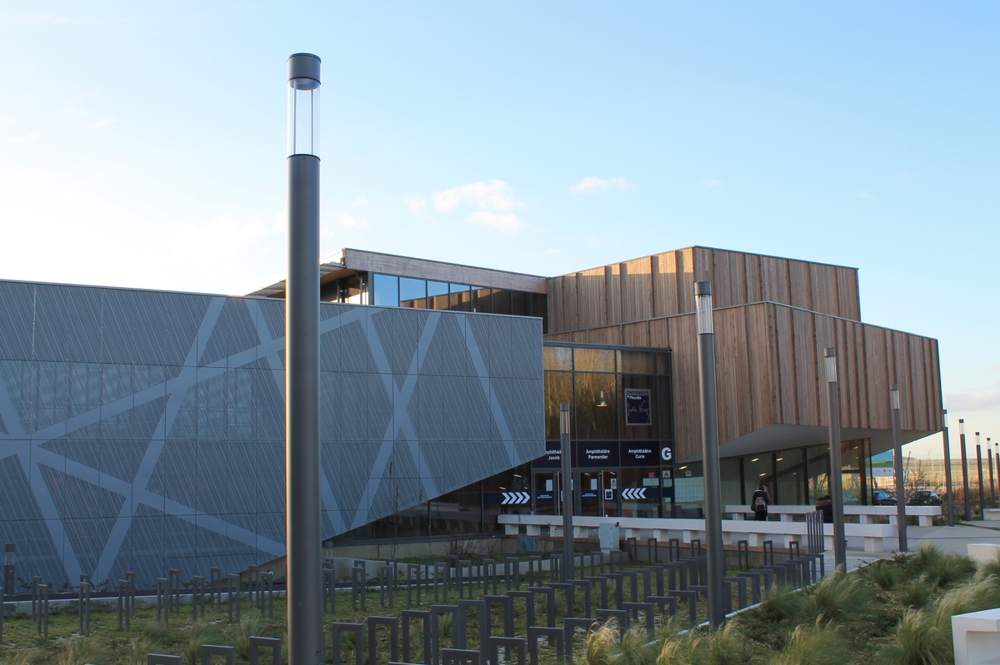
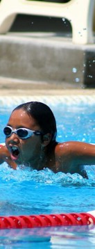
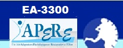
APERE étudie les mécanismes d'adaptation à l'exercice pour optimiser la réadaptation physique chez les personnes âgées ou en situation de handicap, et évaluer la performance sportive de haut niveau. L'équipe développe des protocoles d'entraînement personnalisés à Amiens.
Plateforme d exploration fonctionnelle à l effort, ergospirométrie, électromyographie, analyseur cardiovasculaire.
Expertise en évaluation cardiorespiratoire, kinésiophobie, cryothérapie globale et réadaptation fonctionnelle.
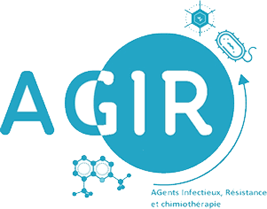
L'unité AGIR conçoit et évalue de nouvelles molécules antimicrobiennes et stratégies innovantes contre les résistances aux antibiotiques. Ses recherches ciblent les bactéries ESKAPEE, les mycobactéries, le paludisme et le virus BK. AGIR maîtrise la synthèse peptidique, le modélisme moléculaire et l'évaluation biologique in vitro/in vivo sur le site amiénois.
Laboratoires L2, séquenceur NGS, spectromètres de masse HPLC/GC-MS, dicroïsme circulaire, RMN 60 MHz.
Expertise en chimie hétérocyclique, modélisation moléculaire SAR, criblage biologique L2/L3 et modèles murins d'infection.
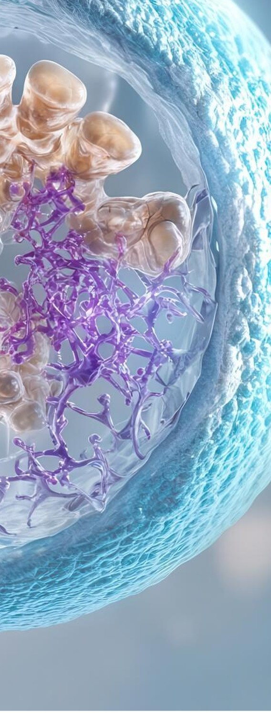
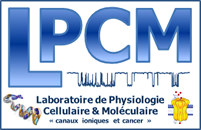
PANCREST (ex-LPCM) mène une recherche translationnelle axée sur le rôle des canaux ioniques comme biomarqueurs et cibles thérapeutiques dans les cancers du pancréas, du poumon et du sein. L équipe étudie l impact du microenvironnement acide et hypoxique sur les tumeurs.
Bancs de Patch-Clamp, imagerie cationique, enceintes d hypoxie, microtomes, automate d hybridation in situ.
Savoir-faire en électrophysiologie patch-clamp, imagerie cationique et histopathologie prédictive sur tissus humains.
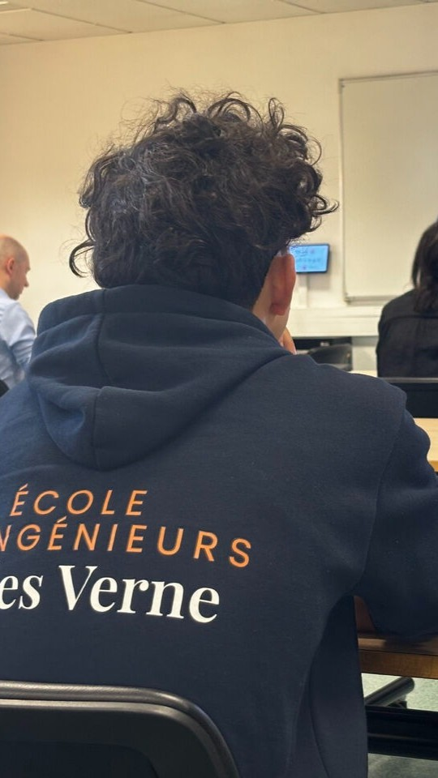
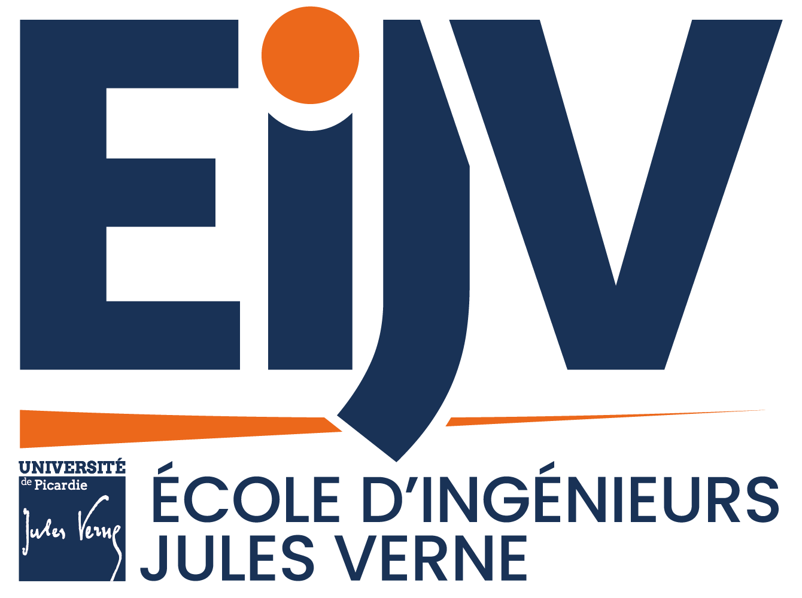
L'EIJV est une école publique d'ingénieurs, composante de l'Université de Picardie Jules Verne, et qui propose 4 spécialités d'ingénieurs dont trois sur Amiens : Cybersécurité, Génie Energétique et Environnement, Numérique, Santé & IA et une sur Saint-Quentin : Supply Chain & Logistique, ainsi que 3 classes préparatoires (CUPGE).
L'EIJV répond aux enjeux du territoire sur le secteur dans les domaines émargents.
Le Gérontopôle Hauts-de-France a pour objet, sur le territoire régional et notamment sur le territoire amiénois, de rapprocher, de valoriser et de dynamiser les acteurs de la recherche, de l’accompagnement et du soin, de la formation, de la prévention, de l’entreprise et des usagers, ainsi que les collectivités territoriales et les services de l’Etat, autour des enjeux du vieillissement en vue d’améliorer la qualité de vie des seniors, des personnes âgées, de leurs proches et des professionnels tout en contribuant à rendre la société plus inclusive.
Etudes et recherche
La réalisation et la diffusion du Diagnostic Territorial Partagé
Etat des lieux ICOPE (Integrated Care for Older PEople)
Prémisses du projet PHARE (Personnes en situation de Handicap Accompagnées pour une Retraite Epanouie)
Formations et métiers
Collaboration avec ESCP Junior : étude sur l’offre de formation, pistes d’évolution, création de cursus
Partenariat avec le CMQeALS (Campus des Métiers et des Qualifications d’Excellence Autonomie, Longévité, Santé)
Communication et information
3 newsletter par an
Participation au podcast “Ensemble, Tous Ensemble”
Silver économie
Convention de partenariat avec innov'a, Eurasanté et ClubsterNSL
Glyx Therapeutics est une biotech amiénoise fondée en 2025, titulaire du label DEEPTECH de Bpifrance. Issue d'une collaboration académique entre le LG2A (Université de Picardie Jules Verne, Amiens) et le Gly-CRRET (Université Paris-Est Créteil), elle développe une molécule « First-in-Class » ciblant la protéine tau pour traiter les tauopathies, dont la maladie d'Alzheimer. Son triple mécanisme d'action — inhibition de l'hyperphosphorylation, dissolution des agrégats tau et réduction de la neuroinflammation — administré par voie orale, est validé en préclinique.
Partenariats
UPJV; Université de Creteil, Université de Lille, SATT Nord, Eurasanté, Innov'a
**Services mutualisés :
- Accueil / Secrétariat
- Documentation/ presse
- Matériel de reprographie
- Conseil et suivi au développement
- Réseaux partenaires et pépinières
- Rencontres thématiques
- Communication des pépinières
**Équipements :
- 13 bureaux équipés
- 5 laboratoires
- 1 atelier professionnel
- 1 salle de réunion
- Espace reprographie et courrier
- 2 cuisines partagées
- Bornes de recharge électriques
Dyscours est l’application de Communication Alternative et Augmentée (CAA) de Dyscoveri. Disponible sur tous les terminaux numériques, elle permet à des personnes privées de la communication orale de s’exprimer par le biais de pictogrammes. L’application transforme les mots en une phrase syntaxiquement correcte, rendant possible l’oralisation de la phrase, alors compréhensible de tous.
Dyscours associe famille et professionnels pour adapter, personnaliser et suivre l’utilisation de la CAA, soutenir les progrès et construire un vrai parcours d’accès à la communication.
Dyscoveri collabore avec l’Université de Picardie Jules Verne et trois de ses laboratoires : MIS (Informatique/IA), CRP-CPO (Psychologie du Développement/Ergonomie) et CERCLL (Sciences du Langage).
Dyscoveri dispose également de soutiens de terrain (IME et EHPAD) avec : La Nouvelle Forge, APAJH de la Somme, Les Papillons Blancs de Lille, La Vie Active et Croix Rouge de la Somme.
Dyscoveri a été finaliste des Trophées des entreprises innovantes (HDFID - 2025) et des Entreprises Remarquables (Réseau Initiative - 2026), elle est aussi lauréate du label “Initiative Remarquable” (Réseau Initiative - 2026).
Dyscoveri a été financée par la Région Hauts-de-France, Initiative Somme France Active Picardie et Amiens Métropole : Fonds Régional d’Incubation, Prêt d’honneur et Bourse French Tech Emergence.
Basé à Amiens, notre collectif réunit coachs certifiés, préparateurs physiques et mentaux, diététiciens, spécialistes en prévention visuelle/posturale, sophrologues et formateurs en Premiers Secours en Santé Mentale. Nous construisons des parcours coordonnés - non juxtaposés - pour les entreprises, sportifs et particuliers, sur le stress, les TMS, la communication et l'énergie durable. Une brique digitale (e-learning, contenus) prolonge l'accompagnement. Incubés à la pépinière d'Amiens et chez innov'A, avec l'ambition de dupliquer le modèle (futures Maisons Capoupa).
Grand-Via : Commercialisation de "Grand-Via", un wagon thérapeutique destiné aux EHPAD et aux unités accueillant des personnes âgées présentant des troubles cognitifs. Développé avec des professionnels du territoire, notamment au CHU d’Amiens, Grand-Via propose un voyage immobile favorisant l’apaisement, la communication et la réminiscence.
Vocalipsy : Vocalipsy est un projet de logiciel d’aide aux médecins généralistes pour mieux repérer les signes de dépression. La solution analyse uniquement les caractéristiques acoustiques de la voix. Projet incubé chez Innova.
Connaissance du secteur médico-social, collaboration avec des professionnels de santé, expérimentation clinique, fabrication, installation et formation des équipes.
Avec son accès direct à toute la recherche publique en France (dont les chercheurs de l’UPJV et le CHU d’Amiens), la SATT Nord vous permet de vous développer grâce à des innovations technologiques concrètes, utiles et rapidement commercialisables.
Vous souhaitez consolider l’existant mais aussi conquérir de nouveaux marchés avec des offres innovantes de produits ou services qui anticipent et répondent aux nouvelles tendances.
La SATT Nord est un interlocuteur unique qui suit et coordonne le projet, comprend vos contraintes et vos besoins, vous aide à minimiser les risques liés à l’innovation.
Grâce à son équipe pluridisciplinaire et professionnelle (chefs de projets, chargés d’affaires, business developers, experts en propriété intellectuelle, experts juridiques), la SATT Nord assure la détection de projets, leur maturation et leur protection intellectuelle, jusqu’à leur commercialisation par des transferts ou par des créations d’entreprises à destination du tissu industriel local, national ou international.
Les missions de la SATT Nord :
- Identification des projets innovants à forte valeur ajoutée et positionnement par rapport à la concurrence et aux besoins du marché.
- Investissement dans le développement des technologies (preuves de concept, prototypage…).
- Protection des résultats de recherche par le dépôt et l’entretien de titres de propriété intellectuelle (brevets…)
- Commercialisation jusqu’au transfert au monde économique sous forme de licensing et de création de start-up.
WE REV'ART développe une infrastructure de diffusion artistique qui permet de programmer, personnaliser et renouveler des œuvres d'art sur écrans selon les contextes, les publics et les objectifs émotionnels recherchés. L’entreprise souhaite développer des expérimentations avec les acteurs amiénois de la santé, du médico-social, de la culture et de l’innovation, notamment autour de l’expérience patient et de la régulation émotionnelle.
Plateforme de diffusion et de programmation artistique sur écrans.
Playlists personnalisées, curation d’œuvres audiovisuelles et environnements artistiques adaptés aux lieux de santé, médico-sociaux et de bien-être.
Projet CUREIA : recherche sur l’adaptation des contenus aux états émotionnels et attentionnels.
Partenariats et expérimentations en Hauts-de-France.

Talan contribue à la transformation numérique du territoire en mobilisant ses expertises en Data, IA, Cloud et digital au service des acteurs économiques, publics et de santé des Hauts-de-France. Le développement de SDRApps à Amiens a marqué une étape clé pour Talan, en accélérant son accompagnement des acteurs de la e-santé autour de solutions numériques sur mesure, sécurisées et souveraines.
Accessibilité numérique (expertises RGAA), Design Thinking, Opensource, Security by Design, Data, IA
Le GRADeS Inéa est l'opérateur régional de la e-santé, mandaté par l'ARS. Sur le territoire amiénois, il accompagne établissements sanitaires, médico-sociaux et professionnels libéraux dans le déploiement d'outils numériques partagés et sécurisés (Mon Espace Santé, ViaTrajectoire, MSSanté). Ses missions : pilotage de projets, expertise technique et cybersécurité. Le GRADeS est également un facilitateur de l'innovation en favorisant la rencontre des écosystèmes ainsi que l’émergence de solutions numériques innovantes, adaptées aux besoins des professionnels.
Pourquoi entrer en contact avec un GRADeS ?
Pour connaître l’offre de services, régionale et nationale ;
Pour identifier les référentiels régionaux et nationaux qui me concernent ;
Pour intégrer techniquement les SI et référentiels régionaux et nationaux ;
Pour bénéficier d’un retour d’expérience sur la conception d’outils e-santé ;
Pour bénéficier d’une expertise en cyber-sécurité dans le secteur de la e-santé ;
Pour bénéficier d’un appui dans la recherche de partenaires au niveau local et territorial.
Numih France est le 1er acteur public au service de la transformation numérique des établissements de santé, et s’engage aux côtés des collectivités territoriales et des services déconcentrés de l’État. Structure de coopération publique, notre vocation est d’accompagner nos adhérents en : imaginant, développant et déployant des solutions numériques innovantes, souveraines, sécurisées, éthiques et responsables, relayant et soutenant la mise en œuvre des politiques publiques pour faciliter leur déploiement.
SPORTOPIA développe un strap connecté de physiothérapie intégrant cryothérapie (jusqu'à -10 °C), thermothérapie (+40 °C), vibration et compression, sans eau ni glace. Cette technologie vise à rendre la récupération musculaire accessible en mobilité pour les sportifs, les professionnels de santé et, à terme, d'autres secteurs nécessitant une récupération ciblée.
Recherche de collaborations avec enseignants-chercheurs, laboratoires, centres techniques, professionnels de santé, clubs sportifs, fédérations, sportifs et industriels pour faire progresser les connaissances et accélérer le développement de technologies innovantes dédiées à la récupération musculaire ciblée..
Caisse d'épargne Hauts de France
Banque mutualiste locale qui accompagne les professionnels selons plusieurs directions.
bancarisation financement prise de participation
Depuis 2024, au service des porteurs de projets et entreprises.
Nous déployons 3 missions principales :
- Incubation & Accélération : accompagner les porteurs de projet et start-ups dans la création d’entreprises innovantes, au travers d’un accompagnement sur mesure :
- Pulseur d'innovations : des accompagnement spécifique : aide au montage de projets collaboratifs, recherche de financements, mises en relation ciblées, veilles thématiques…
- L’organisation d’événements : fédérer et dynamiser les filières d’innovation du territoire
Une exposition des acteurs d'innovants at été réalisée et regroupe plus de +40 portraits consultable ici ; https://www.innov-a.com/linnovation-une-histoire-collective/
L'intégration de la R&D, de l'innovation et des enjeux ESG (Environnement, Société, Gouvernance) dans la stratégie d'entreprise contribue à sa compétitivité et à ses performances économiques. De nombreuses sources de financements publics ou privés permettent de soutenir ces investissements.
SIDONY contribue à l’élaboration et la mise en œuvre de la stratégie de développement des entreprises en s’appuyant sur les leviers clés que sont la recherche, l’innovation et la durabilité, et en lien avec le plan de financement intégrant les financements publics et/ou privés.
R&D et innovation : accompagnement sur mesure depuis la formalisation de votre stratégie, le positionnement marché, l'élaboration de votre business plan à la recherche de partenaires technologiques, les demandes de financement, le suivi de projet.
Durabilité : élaboration et mise en oeuvre de la stratégie RSE, bilan carbone
Sidony est référencée pour les prestations Diag Bpifrance.
Spécialisée dans la conception, le développement et la fabrication de dispositifs médicaux de pointe pour la chirurgie du dos, NOVASPINE est ancrée dans l'écosystème depuis sa création en 2006.
D’abord installée à Salouël et forte de son essor, la société a récemment déménagé dans un bâtiment neuf à côté du CHU d’Amiens permettant d'accompagner sa croissance et de se rapprocher d'acteur locaux de la santé.
Soucieuse de satisfaire l’ensemble de ses clients et afin de leur fournir des produits fiables et de qualité, la société Novaspine est dotée d’un certificat du Système de Management Qualité selon l’ISO 13485 : 2016 & EN ISO 13485 :2016.
Nos dispositifs médicaux répondent également aux dispositions du règlement Européenne 2017/45 pour l'obtention du marquage CE.
NovaSpine fournit ses dispositifs médicaux en France et dans pus de 30 pays.
Déjà engagée dans des projets de sécurité sociale de l'alimentation, de PTCE et à caractères pédagogiques.
Nous cochons les 17 odd au travers de nos actions locales
Basée à Amiens, Bow Medical est l'éditeur français leader européen de l'informatisation des soins critiques. Depuis plus de 25 ans, sa plateforme Diane accompagne anesthésistes et réanimateurs pour sécuriser la prise en charge des patients, notamment au CHU Amiens-Picardie. Ses solutions sont déployées dans plus de 450 établissements en France et en Europe : Diane Consult gère 5 millions de consultations d'anesthésie par an (environ 70 % des consultations informatisées en France), Diane Op équipe 3 000 salles de bloc et Diane Rea plus de 1 200 lits de réanimation.
Suite Diane couvrant tout le parcours du patient critique :
- consultation d'anesthésie (Diane Consult),
- bloc opératoire (Diane Op),
- réanimation (Diane Rea),
- questionnaire pré-anesthésique digital (QPA),
- planification, téléconsultation et télé-expertise
Éditeur amiénois depuis plus de 25 ans, Bow Medical est devenu le leader européen de l'informatisation des soins critiques.
- Son expertise métier des soins critiques (anesthésie, bloc, réanimation) pour cadrer et évaluer des projets innovants
- La plateforme Diane et ses environnements de test, pour intégrer ou expérimenter de nouvelles solutions
- Son savoir-faire en interopérabilité et en connexion des dispositifs médicaux au système d'information hospitalier
- Son expérience du développement et de la mise sur le marché de logiciels de santé [à confirmer : statut dispositif médical / marquage CE]